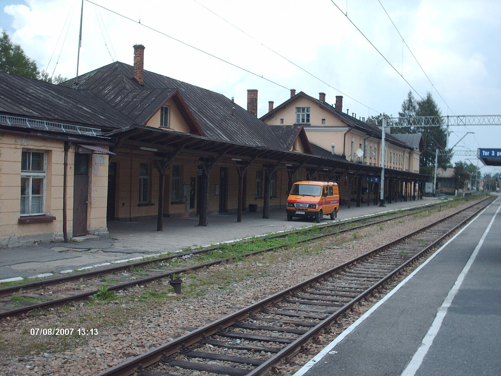

출발 · 0:00
자코파네 기차역
Dworzec Kolejowy Zakopane · PKP
9회차 Beat 1에서 본 그 1899년 철도의 종착역. 처음 역사 건물은 분할기 갈리시아 양식이었으나, 2017년 현대식 건물로 재건되었다. 자코파네에 들어오는 거의 모든 폴란드인이 — 한 번은 — 이 한 자리를 거친다.
역 광장에서 시내(크루포브키)까지는 도보 10–15분, 약 700m. 기차역 옆에 — 같은 건물 단지로 — 버스 터미널(Dworzec Autobusowy)이 있다. 모르스키에 오코(코스 C)와 쿠즈니체(코스 B 케이블카 하부)행 버스가 여기서 출발한다.
역에서 시내로 가는 길은 — Kościuszki 거리 — 를 따라 남서쪽으로. 약 5분 걷다 보면 그 거리 끝에 — 크루포브키 거리의 북단이 — 직각으로 만난다.